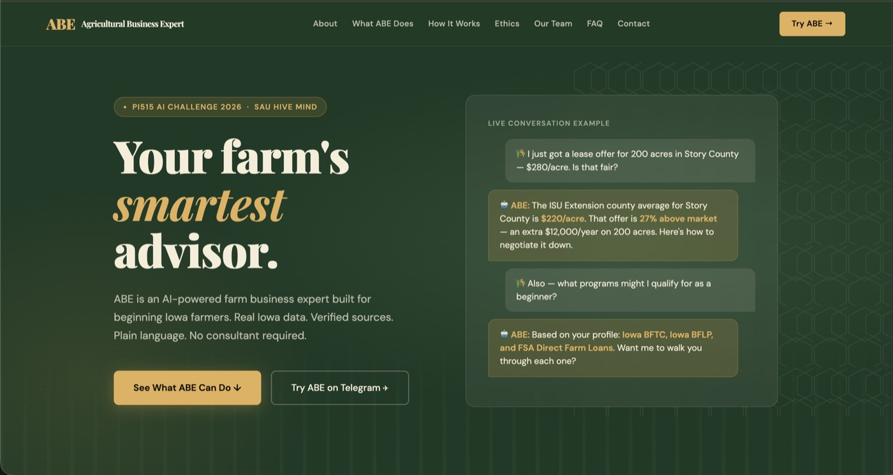
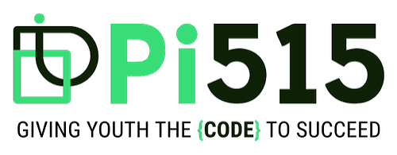

Work
Projects
Competitions, hackathons and side projects: turning messy data into working systems.

Turns one upstream flood report into a per-settlement evacuation plan in seconds: when the wave arrives, how long it takes to walk uphill to safe ground, which bridges not to cross, and who has no time left. We replayed the Oct 11, 2026 Budhi Gandaki flood. The official SMS went out at 06:40 and left all 1,456 people without enough time. With a warning at 03:30 instead, none would have been left without time. Damage and flood-area models are trained on real 2026 floods, and a what-if map runs on the IBM z17's on-chip AI accelerator.
Turns "I want to learn X" into a researched study plan, then keeps you on track with check-ins, mastery checks and new-paper alerts. A planner agent drafts from OpenAlex, Open Library and Wikipedia, an internal reviewer checks the plan, and the learner approves every change under rules they set. Every model call, tool call and review round is traced.


Pi515 · Iowa · 2026Built AI agents and multi-modal systems for Pi515's Day of Innovation, focused on applying practical AI to real problems affecting Iowa communities. Reached the finalist round.

Full-stack private prediction league app for the FIFA World Cup 2026. Friends create leagues, predict exact scorelines, and compete on a live leaderboard. Predictions lock the moment a match goes live.

 Hugging Face Hackathon · 2026
Hugging Face Hackathon · 2026
AI-driven murder mystery game where a single ~27B model authors the entire case — plot, suspects, clues, and lies — then role-plays every character live as you interrogate them.
 Kaggle Competition · 2024–Present
Kaggle Competition · 2024–Present
Kaggle's NCAA tournament prediction challenge. Built BigQuery feature tables from 30+ sources, ensembled 5 models, and implemented Monte Carlo simulation. Top 13% in 2026: Brier score 0.1287, 451st out of 3,462 teams.
Analyzed 10 seasons of scheduling data to quantify travel and back-to-back game impact. Built animated US travel maps and home-away streak heatmaps. Key finding: MIA gained 3.8 wins, POR lost 3.3 wins due to scheduling (2019–2024).
Some work is under NDA or proprietary agreements. See public work on Kaggle and GitHub.